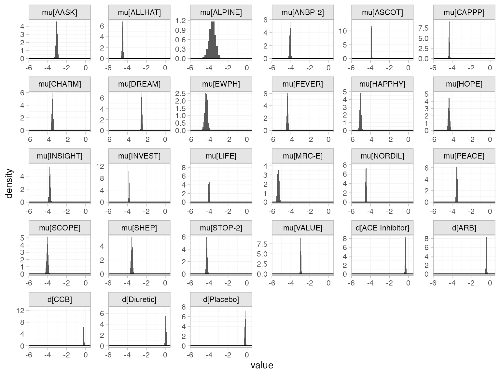
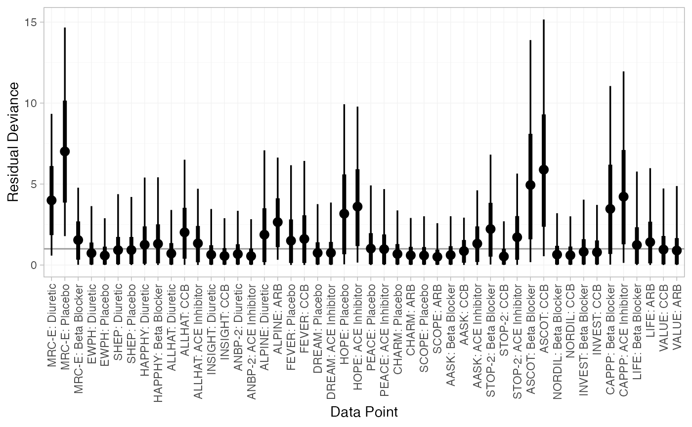
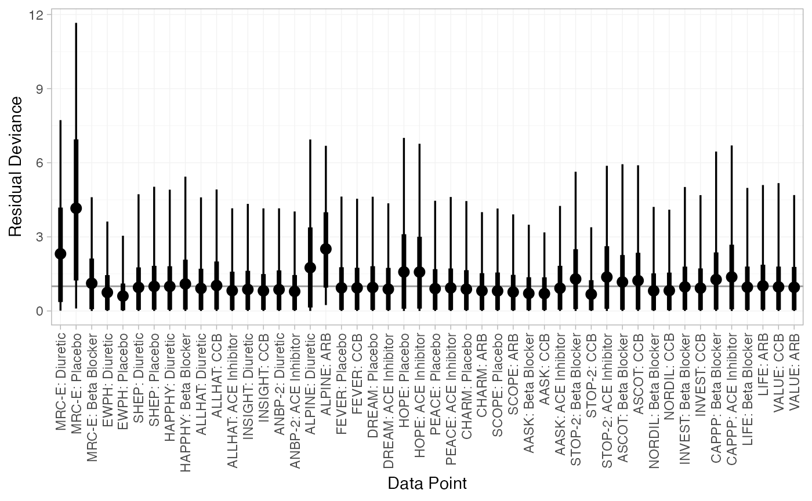
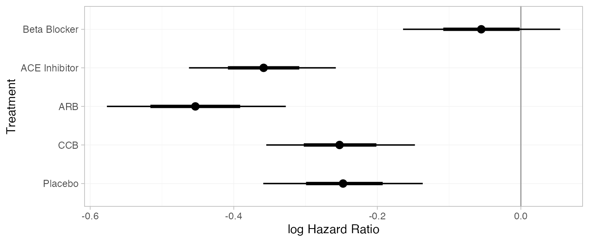
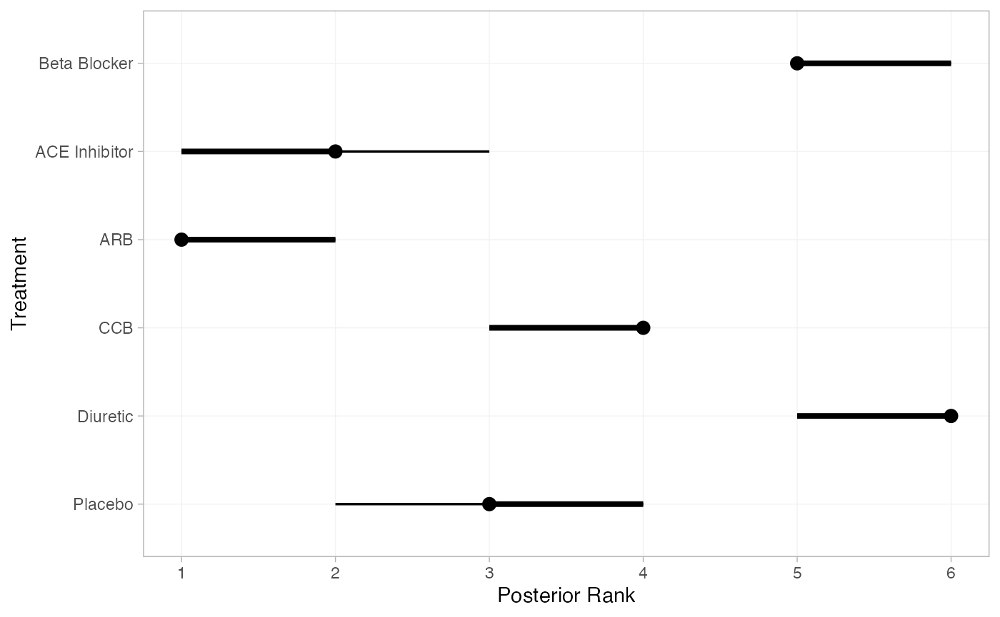

library(multinma)
options(mc.cores = parallel::detectCores())#> For execution on a local, multicore CPU with excess RAM we recommend calling
#> options(mc.cores = parallel::detectCores())
#>
#> Attaching package: 'multinma'
#> The following objects are masked from 'package:stats':
#>
#> dgamma, pgamma, qgammaThis vignette describes the analysis of data on the number of new
cases of diabetes in 22 trials of 6 antihypertensive drugs (Elliott and Meyer 2007;
Dias et al. 2011). The data are available
in this package as diabetes:
head(diabetes)
#> studyn studyc trtn trtc r n time
#> 1 1 MRC-E 1 Diuretic 43 1081 5.8
#> 2 1 MRC-E 2 Placebo 34 2213 5.8
#> 3 1 MRC-E 3 Beta Blocker 37 1102 5.8
#> 4 2 EWPH 1 Diuretic 29 416 4.7
#> 5 2 EWPH 2 Placebo 20 424 4.7
#> 6 3 SHEP 1 Diuretic 140 1631 3.0Setting up the network
We begin by setting up the network. We have arm-level count data
giving the number of new cases of diabetes (r) out of the
total (n) in each arm, so we use the function
set_agd_arm(). For computational efficiency, we let “Beta
Blocker” be set as the network reference treatment by default. Elliott and Meyer (2007) and Dias
et al. (2011) use “Diuretic” as the
reference, but it is a simple matter to transform the results after
fitting the NMA model.1
db_net <- set_agd_arm(diabetes,
study = studyc,
trt = trtc,
r = r,
n = n)
db_net
#> A network with 22 AgD studies (arm-based).
#>
#> ------------------------------------------------------- AgD studies (arm-based) ----
#> Study Treatment arms
#> AASK 3: Beta Blocker | ACE Inhibitor | CCB
#> ALLHAT 3: ACE Inhibitor | CCB | Diuretic
#> ALPINE 2: ARB | Diuretic
#> ANBP-2 2: ACE Inhibitor | Diuretic
#> ASCOT 2: Beta Blocker | CCB
#> CAPPP 2: Beta Blocker | ACE Inhibitor
#> CHARM 2: ARB | Placebo
#> DREAM 2: ACE Inhibitor | Placebo
#> EWPH 2: Diuretic | Placebo
#> FEVER 2: CCB | Placebo
#> ... plus 12 more studies
#>
#> Outcome type: count
#> ------------------------------------------------------------------------------------
#> Total number of treatments: 6
#> Total number of studies: 22
#> Reference treatment is: Beta Blocker
#> Network is connectedWe also have details of length of follow-up in years in each trial
(time), which we will use as an offset with a cloglog link
function to model the data as rates. We do not have to specify this in
the function set_agd_arm(): any additional columns in the
data (e.g. offsets or covariates, here the column time)
will automatically be made available in the network.
Plot the network structure.
plot(db_net, weight_edges = TRUE, weight_nodes = TRUE)
Meta-analysis models
We fit both fixed effect (FE) and random effects (RE) models.
Fixed effect meta-analysis
First, we fit a fixed effect model using the nma()
function with trt_effects = "fixed". We use
prior distributions for the treatment effects
and study-specific intercepts
.
We can examine the range of parameter values implied by these prior
distributions with the summary() method:
summary(normal(scale = 100))
#> A Normal prior distribution: location = 0, scale = 100.
#> 50% of the prior density lies between -67.45 and 67.45.
#> 95% of the prior density lies between -196 and 196.The model is fitted using the nma() function. We specify
that a cloglog link will be used with link = "cloglog" (the
Binomial likelihood is the default for these data), and specify the log
follow-up time offset using the regression formula
regression = ~offset(log(time)).
db_fit_FE <- nma(db_net,
trt_effects = "fixed",
link = "cloglog",
regression = ~offset(log(time)),
prior_intercept = normal(scale = 100),
prior_trt = normal(scale = 100))
#> Note: No treatment classes specified in network, any interactions in `regression` formula will be separate (independent) for each treatment.
#> Use set_*() argument `trt_class` and nma() argument `class_interactions` to change this.
#> Note: Setting "Beta Blocker" as the network reference treatment.Basic parameter summaries are given by the print()
method:
db_fit_FE
#> A fixed effects NMA with a binomial likelihood (cloglog link).
#> Regression model: ~offset(log(time)).
#> Inference for Stan model: binomial_1par.
#> 4 chains, each with iter=2000; warmup=1000; thin=1;
#> post-warmup draws per chain=1000, total post-warmup draws=4000.
#>
#> mean se_mean sd 2.5% 25% 50% 75% 97.5%
#> d[ACE Inhibitor] -0.30 0.00 0.05 -0.39 -0.34 -0.30 -0.27 -0.21
#> d[ARB] -0.40 0.00 0.05 -0.49 -0.43 -0.40 -0.37 -0.31
#> d[CCB] -0.20 0.00 0.03 -0.26 -0.22 -0.20 -0.18 -0.14
#> d[Diuretic] 0.05 0.00 0.06 -0.05 0.02 0.06 0.09 0.16
#> d[Placebo] -0.19 0.00 0.05 -0.29 -0.23 -0.19 -0.16 -0.09
#> lp__ -37970.30 0.09 3.64 -37978.50 -37972.56 -37970.06 -37967.69 -37963.89
#> n_eff Rhat
#> d[ACE Inhibitor] 1657 1
#> d[ARB] 2483 1
#> d[CCB] 1915 1
#> d[Diuretic] 1868 1
#> d[Placebo] 1482 1
#> lp__ 1824 1
#>
#> Samples were drawn using NUTS(diag_e) at Fri Aug 2 15:22:19 2024.
#> For each parameter, n_eff is a crude measure of effective sample size,
#> and Rhat is the potential scale reduction factor on split chains (at
#> convergence, Rhat=1).By default, summaries of the study-specific intercepts
are hidden, but could be examined by changing the pars
argument:
The prior and posterior distributions can be compared visually using
the plot_prior_posterior() function:
plot_prior_posterior(db_fit_FE)
Random effects meta-analysis
We now fit a random effects model using the nma()
function with trt_effects = "random". Again, we use
prior distributions for the treatment effects
and study-specific intercepts
,
and we additionally use a
prior for the heterogeneity standard deviation
.
We can examine the range of parameter values implied by these prior
distributions with the summary() method:
summary(normal(scale = 100))
#> A Normal prior distribution: location = 0, scale = 100.
#> 50% of the prior density lies between -67.45 and 67.45.
#> 95% of the prior density lies between -196 and 196.
summary(half_normal(scale = 5))
#> A half-Normal prior distribution: location = 0, scale = 5.
#> 50% of the prior density lies between 0 and 3.37.
#> 95% of the prior density lies between 0 and 9.8.Fitting the RE model
db_fit_RE <- nma(db_net,
trt_effects = "random",
link = "cloglog",
regression = ~offset(log(time)),
prior_intercept = normal(scale = 10),
prior_trt = normal(scale = 10),
prior_het = half_normal(scale = 5),
init_r = 0.5)
#> Note: No treatment classes specified in network, any interactions in `regression` formula will be separate (independent) for each treatment.
#> Use set_*() argument `trt_class` and nma() argument `class_interactions` to change this.
#> Note: Setting "Beta Blocker" as the network reference treatment.Basic parameter summaries are given by the print()
method:
db_fit_RE
#> A random effects NMA with a binomial likelihood (cloglog link).
#> Regression model: ~offset(log(time)).
#> Inference for Stan model: binomial_1par.
#> 4 chains, each with iter=2000; warmup=1000; thin=1;
#> post-warmup draws per chain=1000, total post-warmup draws=4000.
#>
#> mean se_mean sd 2.5% 25% 50% 75% 97.5%
#> d[ACE Inhibitor] -0.33 0.00 0.08 -0.49 -0.38 -0.33 -0.28 -0.18
#> d[ARB] -0.40 0.00 0.09 -0.60 -0.46 -0.40 -0.34 -0.22
#> d[CCB] -0.17 0.00 0.06 -0.29 -0.21 -0.17 -0.13 -0.04
#> d[Diuretic] 0.07 0.00 0.09 -0.10 0.01 0.07 0.13 0.25
#> d[Placebo] -0.22 0.00 0.09 -0.39 -0.27 -0.22 -0.16 -0.05
#> lp__ -37980.88 0.21 6.79 -37995.13 -37985.14 -37980.45 -37976.16 -37968.39
#> tau 0.13 0.00 0.04 0.06 0.10 0.12 0.15 0.23
#> n_eff Rhat
#> d[ACE Inhibitor] 2057 1
#> d[ARB] 2483 1
#> d[CCB] 2448 1
#> d[Diuretic] 2279 1
#> d[Placebo] 1870 1
#> lp__ 1032 1
#> tau 1053 1
#>
#> Samples were drawn using NUTS(diag_e) at Fri Aug 2 15:22:27 2024.
#> For each parameter, n_eff is a crude measure of effective sample size,
#> and Rhat is the potential scale reduction factor on split chains (at
#> convergence, Rhat=1).By default, summaries of the study-specific intercepts
and study-specific relative effects
are hidden, but could be examined by changing the pars
argument:
The prior and posterior distributions can be compared visually using
the plot_prior_posterior() function:
plot_prior_posterior(db_fit_RE, prior = c("trt", "het"))
Model comparison
Model fit can be checked using the dic() function:
(dic_FE <- dic(db_fit_FE))
#> Residual deviance: 78.2 (on 48 data points)
#> pD: 27
#> DIC: 105.2
(dic_RE <- dic(db_fit_RE))
#> Residual deviance: 53.5 (on 48 data points)
#> pD: 38.2
#> DIC: 91.7The FE model is a very poor fit to the data, with a residual deviance much higher than the number of data points. The RE model fits the data better, and has a much lower DIC; we prefer the RE model.
We can also examine the residual deviance contributions with the
corresponding plot() method.
plot(dic_FE)
plot(dic_RE)
Further results
For comparison with Elliott and Meyer (2007) and Dias
et al. (2011), we can produce relative
effects against “Diuretic” using the relative_effects()
function with trt_ref = "Diuretic":
(db_releff_FE <- relative_effects(db_fit_FE, trt_ref = "Diuretic"))
#> mean sd 2.5% 25% 50% 75% 97.5% Bulk_ESS Tail_ESS Rhat
#> d[Beta Blocker] -0.05 0.06 -0.16 -0.09 -0.06 -0.02 0.05 1895 2372 1
#> d[ACE Inhibitor] -0.36 0.05 -0.46 -0.39 -0.36 -0.32 -0.26 5041 3299 1
#> d[ARB] -0.45 0.06 -0.58 -0.50 -0.45 -0.41 -0.33 4056 3578 1
#> d[CCB] -0.25 0.05 -0.35 -0.29 -0.25 -0.22 -0.15 3358 3133 1
#> d[Placebo] -0.25 0.06 -0.36 -0.28 -0.25 -0.21 -0.14 4578 3624 1
plot(db_releff_FE, ref_line = 0)
(db_releff_RE <- relative_effects(db_fit_RE, trt_ref = "Diuretic"))
#> mean sd 2.5% 25% 50% 75% 97.5% Bulk_ESS Tail_ESS Rhat
#> d[Beta Blocker] -0.07 0.09 -0.25 -0.13 -0.07 -0.01 0.10 2296 2559 1
#> d[ACE Inhibitor] -0.40 0.09 -0.58 -0.46 -0.40 -0.35 -0.24 4614 2802 1
#> d[ARB] -0.47 0.11 -0.70 -0.54 -0.47 -0.40 -0.27 4229 2794 1
#> d[CCB] -0.24 0.08 -0.41 -0.30 -0.24 -0.19 -0.08 4094 3073 1
#> d[Placebo] -0.29 0.09 -0.48 -0.35 -0.29 -0.23 -0.12 4296 3191 1
plot(db_releff_RE, ref_line = 0)Dias et al. (2011) produce absolute predictions of the
probability of developing diabetes after three years, assuming a Normal
distribution on the baseline cloglog probability of developing diabetes
on diuretic treatment with mean
and precision
.
We can replicate these results using the predict() method.
We specify a data frame of newdata, containing the
time offset(s) at which to produce predictions (here only 3
years). The baseline argument takes a distr()
distribution object with which we specify the corresponding Normal
distribution on the baseline cloglog probability, and we set
baseline_trt = "Diuretic" to indicate that the baseline
distribution corresponds to “Diuretic” rather than the network reference
“Beta Blocker”. We set type = "response" to produce
predicted event probabilities (type = "link" would produce
predicted cloglog probabilities).
db_pred_FE <- predict(db_fit_FE,
newdata = data.frame(time = 3),
baseline = distr(qnorm, mean = -4.2, sd = 1.11^-0.5),
baseline_trt = "Diuretic",
type = "response")
db_pred_FE
#> ------------------------------------------------------------------ Study: New 1 ----
#>
#> mean sd 2.5% 25% 50% 75% 97.5% Bulk_ESS Tail_ESS Rhat
#> pred[New 1: Beta Blocker] 0.06 0.06 0.01 0.02 0.04 0.08 0.22 4072 3918 1
#> pred[New 1: ACE Inhibitor] 0.05 0.05 0.01 0.02 0.03 0.06 0.17 4089 3919 1
#> pred[New 1: ARB] 0.04 0.04 0.00 0.02 0.03 0.05 0.16 4034 3878 1
#> pred[New 1: CCB] 0.05 0.05 0.01 0.02 0.03 0.06 0.19 4072 3919 1
#> pred[New 1: Diuretic] 0.06 0.06 0.01 0.02 0.04 0.08 0.23 4064 3878 1
#> pred[New 1: Placebo] 0.05 0.05 0.01 0.02 0.03 0.06 0.19 4065 3879 1
plot(db_pred_FE)
db_pred_RE <- predict(db_fit_RE,
newdata = data.frame(time = 3),
baseline = distr(qnorm, mean = -4.2, sd = 1.11^-0.5),
baseline_trt = "Diuretic",
type = "response")
db_pred_RE
#> ------------------------------------------------------------------ Study: New 1 ----
#>
#> mean sd 2.5% 25% 50% 75% 97.5% Bulk_ESS Tail_ESS Rhat
#> pred[New 1: Beta Blocker] 0.06 0.07 0.01 0.02 0.04 0.08 0.25 4344 4017 1
#> pred[New 1: ACE Inhibitor] 0.05 0.05 0.00 0.02 0.03 0.06 0.19 4355 3868 1
#> pred[New 1: ARB] 0.04 0.05 0.00 0.01 0.03 0.05 0.17 4349 3770 1
#> pred[New 1: CCB] 0.05 0.06 0.01 0.02 0.04 0.07 0.21 4358 3918 1
#> pred[New 1: Diuretic] 0.07 0.07 0.01 0.02 0.04 0.08 0.26 4365 3649 1
#> pred[New 1: Placebo] 0.05 0.06 0.01 0.02 0.03 0.06 0.20 4351 3892 1
plot(db_pred_RE)
If the baseline and newdata arguments are
omitted, predicted probabilities will be produced for every study in the
network based on their follow-up times and estimated baseline cloglog
probabilities
:
db_pred_RE_studies <- predict(db_fit_RE, type = "response")
db_pred_RE_studies
#> ------------------------------------------------------------------- Study: AASK ----
#>
#> mean sd 2.5% 25% 50% 75% 97.5% Bulk_ESS Tail_ESS Rhat
#> pred[AASK: Beta Blocker] 0.17 0.02 0.14 0.16 0.17 0.18 0.20 5856 3012 1
#> pred[AASK: ACE Inhibitor] 0.12 0.01 0.10 0.12 0.12 0.13 0.15 4212 3415 1
#> pred[AASK: ARB] 0.12 0.01 0.09 0.11 0.12 0.13 0.15 4173 3318 1
#> pred[AASK: CCB] 0.15 0.01 0.12 0.14 0.14 0.15 0.18 5456 3418 1
#> pred[AASK: Diuretic] 0.18 0.02 0.14 0.17 0.18 0.19 0.22 3857 2770 1
#> pred[AASK: Placebo] 0.14 0.02 0.11 0.13 0.14 0.15 0.17 3806 3221 1
#>
#> ----------------------------------------------------------------- Study: ALLHAT ----
#>
#> mean sd 2.5% 25% 50% 75% 97.5% Bulk_ESS Tail_ESS Rhat
#> pred[ALLHAT: Beta Blocker] 0.04 0.01 0.03 0.04 0.04 0.05 0.05 2788 2474 1
#> pred[ALLHAT: ACE Inhibitor] 0.03 0.00 0.02 0.03 0.03 0.03 0.04 3825 2905 1
#> pred[ALLHAT: ARB] 0.03 0.00 0.02 0.03 0.03 0.03 0.04 3956 2890 1
#> pred[ALLHAT: CCB] 0.04 0.00 0.03 0.03 0.04 0.04 0.05 3700 2577 1
#> pred[ALLHAT: Diuretic] 0.05 0.01 0.04 0.04 0.05 0.05 0.06 4129 2922 1
#> pred[ALLHAT: Placebo] 0.03 0.00 0.03 0.03 0.03 0.04 0.04 4004 2975 1
#>
#> ----------------------------------------------------------------- Study: ALPINE ----
#>
#> mean sd 2.5% 25% 50% 75% 97.5% Bulk_ESS Tail_ESS Rhat
#> pred[ALPINE: Beta Blocker] 0.03 0.01 0.01 0.02 0.03 0.03 0.05 6620 2912 1
#> pred[ALPINE: ACE Inhibitor] 0.02 0.01 0.01 0.01 0.02 0.02 0.03 6889 3386 1
#> pred[ALPINE: ARB] 0.02 0.01 0.01 0.01 0.02 0.02 0.03 7425 3148 1
#> pred[ALPINE: CCB] 0.02 0.01 0.01 0.02 0.02 0.03 0.04 6995 3191 1
#> pred[ALPINE: Diuretic] 0.03 0.01 0.01 0.02 0.03 0.03 0.05 7301 2646 1
#> pred[ALPINE: Placebo] 0.02 0.01 0.01 0.02 0.02 0.03 0.04 7178 3340 1
#>
#> ----------------------------------------------------------------- Study: ANBP-2 ----
#>
#> mean sd 2.5% 25% 50% 75% 97.5% Bulk_ESS Tail_ESS Rhat
#> pred[ANBP-2: Beta Blocker] 0.07 0.01 0.05 0.06 0.07 0.07 0.09 3256 3085 1
#> pred[ANBP-2: ACE Inhibitor] 0.05 0.01 0.04 0.04 0.05 0.05 0.06 4712 2832 1
#> pred[ANBP-2: ARB] 0.05 0.01 0.03 0.04 0.05 0.05 0.06 4132 2487 1
#> pred[ANBP-2: CCB] 0.06 0.01 0.04 0.05 0.06 0.06 0.08 4179 2957 1
#> pred[ANBP-2: Diuretic] 0.07 0.01 0.06 0.07 0.07 0.08 0.09 4963 3098 1
#> pred[ANBP-2: Placebo] 0.05 0.01 0.04 0.05 0.05 0.06 0.07 4525 2928 1
#>
#> ------------------------------------------------------------------ Study: ASCOT ----
#>
#> mean sd 2.5% 25% 50% 75% 97.5% Bulk_ESS Tail_ESS Rhat
#> pred[ASCOT: Beta Blocker] 0.11 0.00 0.10 0.11 0.11 0.11 0.12 5333 2649 1
#> pred[ASCOT: ACE Inhibitor] 0.08 0.01 0.07 0.08 0.08 0.09 0.10 2443 2771 1
#> pred[ASCOT: ARB] 0.08 0.01 0.06 0.07 0.08 0.08 0.09 2712 2415 1
#> pred[ASCOT: CCB] 0.10 0.01 0.08 0.09 0.10 0.10 0.11 2756 3189 1
#> pred[ASCOT: Diuretic] 0.12 0.01 0.10 0.11 0.12 0.13 0.14 2466 2684 1
#> pred[ASCOT: Placebo] 0.09 0.01 0.08 0.09 0.09 0.10 0.11 2163 2352 1
#>
#> ------------------------------------------------------------------ Study: CAPPP ----
#>
#> mean sd 2.5% 25% 50% 75% 97.5% Bulk_ESS Tail_ESS Rhat
#> pred[CAPPP: Beta Blocker] 0.07 0.00 0.07 0.07 0.07 0.08 0.08 4746 2697 1
#> pred[CAPPP: ACE Inhibitor] 0.05 0.00 0.05 0.05 0.05 0.06 0.06 2342 2517 1
#> pred[CAPPP: ARB] 0.05 0.01 0.04 0.05 0.05 0.05 0.06 2797 2515 1
#> pred[CAPPP: CCB] 0.06 0.00 0.05 0.06 0.06 0.07 0.07 3082 2980 1
#> pred[CAPPP: Diuretic] 0.08 0.01 0.07 0.08 0.08 0.08 0.10 2727 2647 1
#> pred[CAPPP: Placebo] 0.06 0.01 0.05 0.06 0.06 0.06 0.07 2199 2583 1
#>
#> ------------------------------------------------------------------ Study: CHARM ----
#>
#> mean sd 2.5% 25% 50% 75% 97.5% Bulk_ESS Tail_ESS Rhat
#> pred[CHARM: Beta Blocker] 0.09 0.01 0.07 0.08 0.09 0.10 0.12 2847 2184 1
#> pred[CHARM: ACE Inhibitor] 0.07 0.01 0.05 0.06 0.07 0.07 0.09 4152 2493 1
#> pred[CHARM: ARB] 0.06 0.01 0.05 0.06 0.06 0.07 0.08 4657 2744 1
#> pred[CHARM: CCB] 0.08 0.01 0.06 0.07 0.08 0.08 0.10 3660 2636 1
#> pred[CHARM: Diuretic] 0.10 0.01 0.07 0.09 0.10 0.11 0.13 4246 2150 1
#> pred[CHARM: Placebo] 0.07 0.01 0.06 0.07 0.07 0.08 0.09 4524 2869 1
#>
#> ------------------------------------------------------------------ Study: DREAM ----
#>
#> mean sd 2.5% 25% 50% 75% 97.5% Bulk_ESS Tail_ESS Rhat
#> pred[DREAM: Beta Blocker] 0.23 0.03 0.18 0.21 0.23 0.25 0.29 2903 2425 1
#> pred[DREAM: ACE Inhibitor] 0.17 0.02 0.13 0.16 0.17 0.18 0.21 4455 2468 1
#> pred[DREAM: ARB] 0.16 0.02 0.12 0.15 0.16 0.17 0.21 4566 1902 1
#> pred[DREAM: CCB] 0.20 0.03 0.15 0.18 0.19 0.21 0.26 4181 2786 1
#> pred[DREAM: Diuretic] 0.24 0.03 0.19 0.22 0.24 0.26 0.31 4122 2720 1
#> pred[DREAM: Placebo] 0.19 0.02 0.15 0.17 0.19 0.20 0.24 4520 2496 1
#>
#> ------------------------------------------------------------------- Study: EWPH ----
#>
#> mean sd 2.5% 25% 50% 75% 97.5% Bulk_ESS Tail_ESS Rhat
#> pred[EWPH: Beta Blocker] 0.06 0.01 0.04 0.05 0.06 0.07 0.09 4138 2774 1
#> pred[EWPH: ACE Inhibitor] 0.05 0.01 0.03 0.04 0.04 0.05 0.06 5362 2974 1
#> pred[EWPH: ARB] 0.04 0.01 0.03 0.04 0.04 0.05 0.06 5205 3233 1
#> pred[EWPH: CCB] 0.05 0.01 0.04 0.05 0.05 0.06 0.07 5099 3149 1
#> pred[EWPH: Diuretic] 0.07 0.01 0.04 0.06 0.07 0.07 0.09 5204 2824 1
#> pred[EWPH: Placebo] 0.05 0.01 0.03 0.04 0.05 0.06 0.07 5542 3284 1
#>
#> ------------------------------------------------------------------ Study: FEVER ----
#>
#> mean sd 2.5% 25% 50% 75% 97.5% Bulk_ESS Tail_ESS Rhat
#> pred[FEVER: Beta Blocker] 0.04 0.01 0.03 0.04 0.04 0.04 0.05 3362 2938 1
#> pred[FEVER: ACE Inhibitor] 0.03 0.00 0.02 0.03 0.03 0.03 0.04 5056 2710 1
#> pred[FEVER: ARB] 0.03 0.00 0.02 0.03 0.03 0.03 0.04 4880 2731 1
#> pred[FEVER: CCB] 0.04 0.00 0.03 0.03 0.03 0.04 0.05 4887 2850 1
#> pred[FEVER: Diuretic] 0.04 0.01 0.03 0.04 0.04 0.05 0.06 4819 2987 1
#> pred[FEVER: Placebo] 0.03 0.00 0.02 0.03 0.03 0.04 0.04 5062 2595 1
#>
#> ----------------------------------------------------------------- Study: HAPPHY ----
#>
#> mean sd 2.5% 25% 50% 75% 97.5% Bulk_ESS Tail_ESS Rhat
#> pred[HAPPHY: Beta Blocker] 0.02 0 0.02 0.02 0.02 0.03 0.03 5325 3139 1
#> pred[HAPPHY: ACE Inhibitor] 0.02 0 0.01 0.02 0.02 0.02 0.02 4392 3108 1
#> pred[HAPPHY: ARB] 0.02 0 0.01 0.02 0.02 0.02 0.02 4056 3239 1
#> pred[HAPPHY: CCB] 0.02 0 0.02 0.02 0.02 0.02 0.03 5196 3012 1
#> pred[HAPPHY: Diuretic] 0.03 0 0.02 0.02 0.03 0.03 0.03 3741 2871 1
#> pred[HAPPHY: Placebo] 0.02 0 0.02 0.02 0.02 0.02 0.02 3786 3426 1
#>
#> ------------------------------------------------------------------- Study: HOPE ----
#>
#> mean sd 2.5% 25% 50% 75% 97.5% Bulk_ESS Tail_ESS Rhat
#> pred[HOPE: Beta Blocker] 0.06 0.01 0.04 0.05 0.06 0.06 0.08 2953 2322 1
#> pred[HOPE: ACE Inhibitor] 0.04 0.01 0.03 0.04 0.04 0.05 0.05 4718 2868 1
#> pred[HOPE: ARB] 0.04 0.01 0.03 0.04 0.04 0.04 0.05 4014 2932 1
#> pred[HOPE: CCB] 0.05 0.01 0.04 0.04 0.05 0.05 0.07 3985 2961 1
#> pred[HOPE: Diuretic] 0.06 0.01 0.05 0.06 0.06 0.07 0.08 4310 2846 1
#> pred[HOPE: Placebo] 0.05 0.01 0.04 0.04 0.05 0.05 0.06 5317 2758 1
#>
#> ---------------------------------------------------------------- Study: INSIGHT ----
#>
#> mean sd 2.5% 25% 50% 75% 97.5% Bulk_ESS Tail_ESS Rhat
#> pred[INSIGHT: Beta Blocker] 0.07 0.01 0.05 0.06 0.06 0.07 0.09 3484 2451 1
#> pred[INSIGHT: ACE Inhibitor] 0.05 0.01 0.03 0.04 0.05 0.05 0.06 4837 2841 1
#> pred[INSIGHT: ARB] 0.04 0.01 0.03 0.04 0.04 0.05 0.06 4916 2970 1
#> pred[INSIGHT: CCB] 0.06 0.01 0.04 0.05 0.05 0.06 0.07 4759 2671 1
#> pred[INSIGHT: Diuretic] 0.07 0.01 0.05 0.06 0.07 0.08 0.09 5373 2697 1
#> pred[INSIGHT: Placebo] 0.05 0.01 0.04 0.05 0.05 0.06 0.07 4770 2832 1
#>
#> ----------------------------------------------------------------- Study: INVEST ----
#>
#> mean sd 2.5% 25% 50% 75% 97.5% Bulk_ESS Tail_ESS Rhat
#> pred[INVEST: Beta Blocker] 0.08 0.00 0.08 0.08 0.08 0.08 0.09 7397 3036 1
#> pred[INVEST: ACE Inhibitor] 0.06 0.00 0.05 0.06 0.06 0.06 0.07 2489 2730 1
#> pred[INVEST: ARB] 0.06 0.01 0.05 0.05 0.06 0.06 0.07 2806 2645 1
#> pred[INVEST: CCB] 0.07 0.00 0.06 0.07 0.07 0.07 0.08 3012 2530 1
#> pred[INVEST: Diuretic] 0.09 0.01 0.07 0.08 0.09 0.09 0.11 2722 2775 1
#> pred[INVEST: Placebo] 0.07 0.01 0.06 0.06 0.07 0.07 0.08 2177 2229 1
#>
#> ------------------------------------------------------------------- Study: LIFE ----
#>
#> mean sd 2.5% 25% 50% 75% 97.5% Bulk_ESS Tail_ESS Rhat
#> pred[LIFE: Beta Blocker] 0.08 0.00 0.07 0.08 0.08 0.08 0.09 6892 2730 1
#> pred[LIFE: ACE Inhibitor] 0.06 0.01 0.05 0.06 0.06 0.06 0.07 2738 2732 1
#> pred[LIFE: ARB] 0.06 0.01 0.05 0.05 0.06 0.06 0.07 2755 2209 1
#> pred[LIFE: CCB] 0.07 0.01 0.06 0.07 0.07 0.07 0.08 3356 2668 1
#> pred[LIFE: Diuretic] 0.09 0.01 0.07 0.08 0.09 0.09 0.11 2815 2952 1
#> pred[LIFE: Placebo] 0.07 0.01 0.05 0.06 0.07 0.07 0.08 2434 2256 1
#>
#> ------------------------------------------------------------------ Study: MRC-E ----
#>
#> mean sd 2.5% 25% 50% 75% 97.5% Bulk_ESS Tail_ESS Rhat
#> pred[MRC-E: Beta Blocker] 0.03 0 0.02 0.03 0.03 0.03 0.04 3892 2891 1
#> pred[MRC-E: ACE Inhibitor] 0.02 0 0.02 0.02 0.02 0.02 0.03 5151 3090 1
#> pred[MRC-E: ARB] 0.02 0 0.02 0.02 0.02 0.02 0.03 4746 3323 1
#> pred[MRC-E: CCB] 0.03 0 0.02 0.02 0.02 0.03 0.03 4712 2926 1
#> pred[MRC-E: Diuretic] 0.03 0 0.02 0.03 0.03 0.03 0.04 4156 3186 1
#> pred[MRC-E: Placebo] 0.02 0 0.02 0.02 0.02 0.03 0.03 4694 2919 1
#>
#> ----------------------------------------------------------------- Study: NORDIL ----
#>
#> mean sd 2.5% 25% 50% 75% 97.5% Bulk_ESS Tail_ESS Rhat
#> pred[NORDIL: Beta Blocker] 0.05 0.00 0.04 0.05 0.05 0.05 0.06 6409 3060 1
#> pred[NORDIL: ACE Inhibitor] 0.04 0.00 0.03 0.03 0.04 0.04 0.04 3032 2857 1
#> pred[NORDIL: ARB] 0.03 0.00 0.03 0.03 0.03 0.04 0.04 3344 2688 1
#> pred[NORDIL: CCB] 0.04 0.00 0.04 0.04 0.04 0.04 0.05 3646 2922 1
#> pred[NORDIL: Diuretic] 0.05 0.01 0.04 0.05 0.05 0.06 0.06 2999 2891 1
#> pred[NORDIL: Placebo] 0.04 0.00 0.03 0.04 0.04 0.04 0.05 2516 2892 1
#>
#> ------------------------------------------------------------------ Study: PEACE ----
#>
#> mean sd 2.5% 25% 50% 75% 97.5% Bulk_ESS Tail_ESS Rhat
#> pred[PEACE: Beta Blocker] 0.14 0.02 0.10 0.13 0.14 0.15 0.18 3180 2612 1
#> pred[PEACE: ACE Inhibitor] 0.10 0.01 0.08 0.09 0.10 0.11 0.13 4810 2940 1
#> pred[PEACE: ARB] 0.09 0.01 0.07 0.09 0.09 0.10 0.13 4642 2739 1
#> pred[PEACE: CCB] 0.12 0.02 0.09 0.11 0.12 0.13 0.15 4228 2993 1
#> pred[PEACE: Diuretic] 0.15 0.02 0.11 0.13 0.15 0.16 0.19 4225 2777 1
#> pred[PEACE: Placebo] 0.11 0.01 0.09 0.10 0.11 0.12 0.14 5101 2912 1
#>
#> ------------------------------------------------------------------ Study: SCOPE ----
#>
#> mean sd 2.5% 25% 50% 75% 97.5% Bulk_ESS Tail_ESS Rhat
#> pred[SCOPE: Beta Blocker] 0.06 0.01 0.05 0.06 0.06 0.07 0.09 3469 2867 1
#> pred[SCOPE: ACE Inhibitor] 0.05 0.01 0.03 0.04 0.05 0.05 0.06 4796 3170 1
#> pred[SCOPE: ARB] 0.04 0.01 0.03 0.04 0.04 0.05 0.06 5110 2735 1
#> pred[SCOPE: CCB] 0.06 0.01 0.04 0.05 0.05 0.06 0.08 4690 2561 1
#> pred[SCOPE: Diuretic] 0.07 0.01 0.05 0.06 0.07 0.08 0.09 4700 2806 1
#> pred[SCOPE: Placebo] 0.05 0.01 0.04 0.05 0.05 0.06 0.07 5227 2991 1
#>
#> ------------------------------------------------------------------- Study: SHEP ----
#>
#> mean sd 2.5% 25% 50% 75% 97.5% Bulk_ESS Tail_ESS Rhat
#> pred[SHEP: Beta Blocker] 0.09 0.01 0.06 0.08 0.09 0.09 0.11 3100 2510 1
#> pred[SHEP: ACE Inhibitor] 0.06 0.01 0.05 0.06 0.06 0.07 0.08 5233 2717 1
#> pred[SHEP: ARB] 0.06 0.01 0.04 0.05 0.06 0.06 0.08 4727 2877 1
#> pred[SHEP: CCB] 0.07 0.01 0.05 0.07 0.07 0.08 0.10 4437 3048 1
#> pred[SHEP: Diuretic] 0.09 0.01 0.07 0.08 0.09 0.10 0.12 4830 2836 1
#> pred[SHEP: Placebo] 0.07 0.01 0.05 0.06 0.07 0.08 0.09 5354 3210 1
#>
#> ----------------------------------------------------------------- Study: STOP-2 ----
#>
#> mean sd 2.5% 25% 50% 75% 97.5% Bulk_ESS Tail_ESS Rhat
#> pred[STOP-2: Beta Blocker] 0.05 0.00 0.05 0.05 0.05 0.06 0.06 5026 2962 1
#> pred[STOP-2: ACE Inhibitor] 0.04 0.00 0.03 0.04 0.04 0.04 0.05 3322 3121 1
#> pred[STOP-2: ARB] 0.04 0.00 0.03 0.03 0.04 0.04 0.04 3328 3196 1
#> pred[STOP-2: CCB] 0.05 0.00 0.04 0.04 0.05 0.05 0.05 4536 3268 1
#> pred[STOP-2: Diuretic] 0.06 0.01 0.05 0.05 0.06 0.06 0.07 4019 3019 1
#> pred[STOP-2: Placebo] 0.04 0.00 0.03 0.04 0.04 0.05 0.05 3010 2734 1
#>
#> ------------------------------------------------------------------ Study: VALUE ----
#>
#> mean sd 2.5% 25% 50% 75% 97.5% Bulk_ESS Tail_ESS Rhat
#> pred[VALUE: Beta Blocker] 0.20 0.02 0.15 0.18 0.19 0.21 0.25 3245 2085 1
#> pred[VALUE: ACE Inhibitor] 0.15 0.02 0.11 0.13 0.14 0.16 0.19 4617 2685 1
#> pred[VALUE: ARB] 0.14 0.02 0.10 0.13 0.13 0.15 0.17 4516 2850 1
#> pred[VALUE: CCB] 0.17 0.02 0.13 0.16 0.17 0.18 0.21 4583 2311 1
#> pred[VALUE: Diuretic] 0.21 0.03 0.16 0.19 0.21 0.22 0.27 4294 2406 1
#> pred[VALUE: Placebo] 0.16 0.02 0.12 0.15 0.16 0.17 0.21 4569 2700 1
plot(db_pred_RE_studies)
We can also produce treatment rankings, rank probabilities, and cumulative rank probabilities.
(db_ranks <- posterior_ranks(db_fit_RE))
#> mean sd 2.5% 25% 50% 75% 97.5% Bulk_ESS Tail_ESS Rhat
#> rank[Beta Blocker] 5.19 0.42 5 5 5 5 6 2951 NA 1
#> rank[ACE Inhibitor] 1.84 0.55 1 2 2 2 3 4176 3265 1
#> rank[ARB] 1.27 0.51 1 1 1 1 2 3740 3305 1
#> rank[CCB] 3.70 0.51 3 3 4 4 4 3664 3461 1
#> rank[Diuretic] 5.80 0.41 5 6 6 6 6 2907 NA 1
#> rank[Placebo] 3.20 0.59 2 3 3 4 4 3404 2810 1
plot(db_ranks)
(db_rankprobs <- posterior_rank_probs(db_fit_RE))
#> p_rank[1] p_rank[2] p_rank[3] p_rank[4] p_rank[5] p_rank[6]
#> d[Beta Blocker] 0.00 0.00 0.00 0.01 0.79 0.2
#> d[ACE Inhibitor] 0.23 0.70 0.06 0.01 0.00 0.0
#> d[ARB] 0.76 0.22 0.02 0.00 0.00 0.0
#> d[CCB] 0.00 0.02 0.27 0.70 0.01 0.0
#> d[Diuretic] 0.00 0.00 0.00 0.00 0.19 0.8
#> d[Placebo] 0.00 0.07 0.65 0.27 0.00 0.0
plot(db_rankprobs)
(db_cumrankprobs <- posterior_rank_probs(db_fit_RE, cumulative = TRUE))
#> p_rank[1] p_rank[2] p_rank[3] p_rank[4] p_rank[5] p_rank[6]
#> d[Beta Blocker] 0.00 0.00 0.00 0.01 0.8 1
#> d[ACE Inhibitor] 0.23 0.93 0.99 1.00 1.0 1
#> d[ARB] 0.76 0.98 1.00 1.00 1.0 1
#> d[CCB] 0.00 0.02 0.29 0.99 1.0 1
#> d[Diuretic] 0.00 0.00 0.00 0.00 0.2 1
#> d[Placebo] 0.00 0.08 0.72 1.00 1.0 1
plot(db_cumrankprobs)